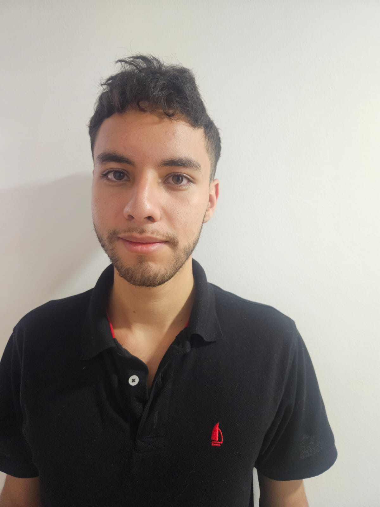
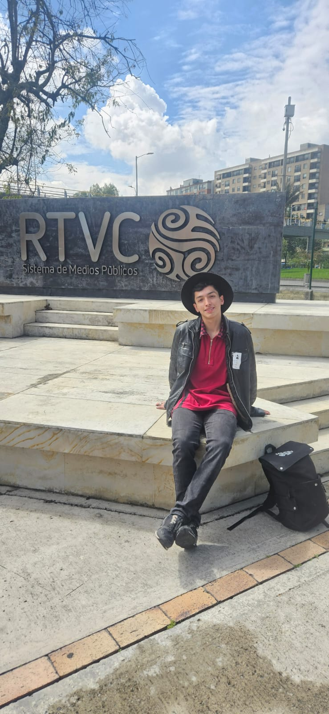
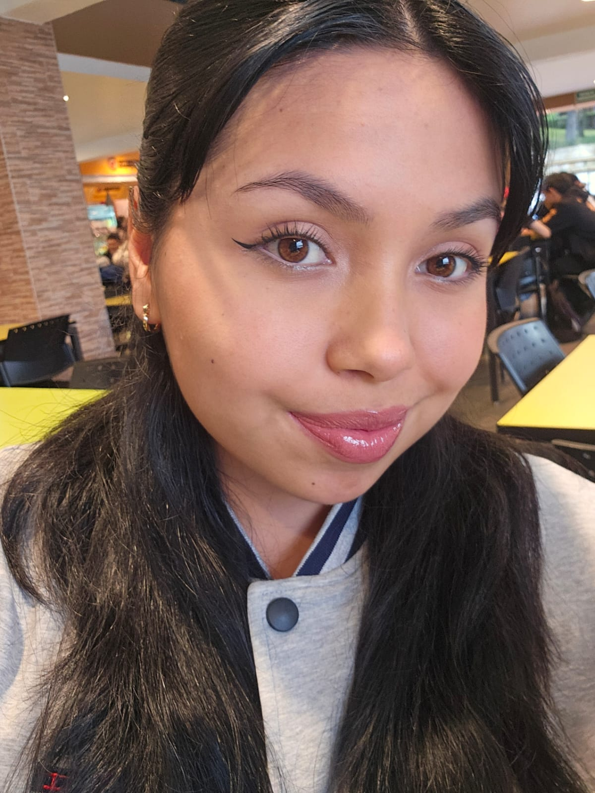
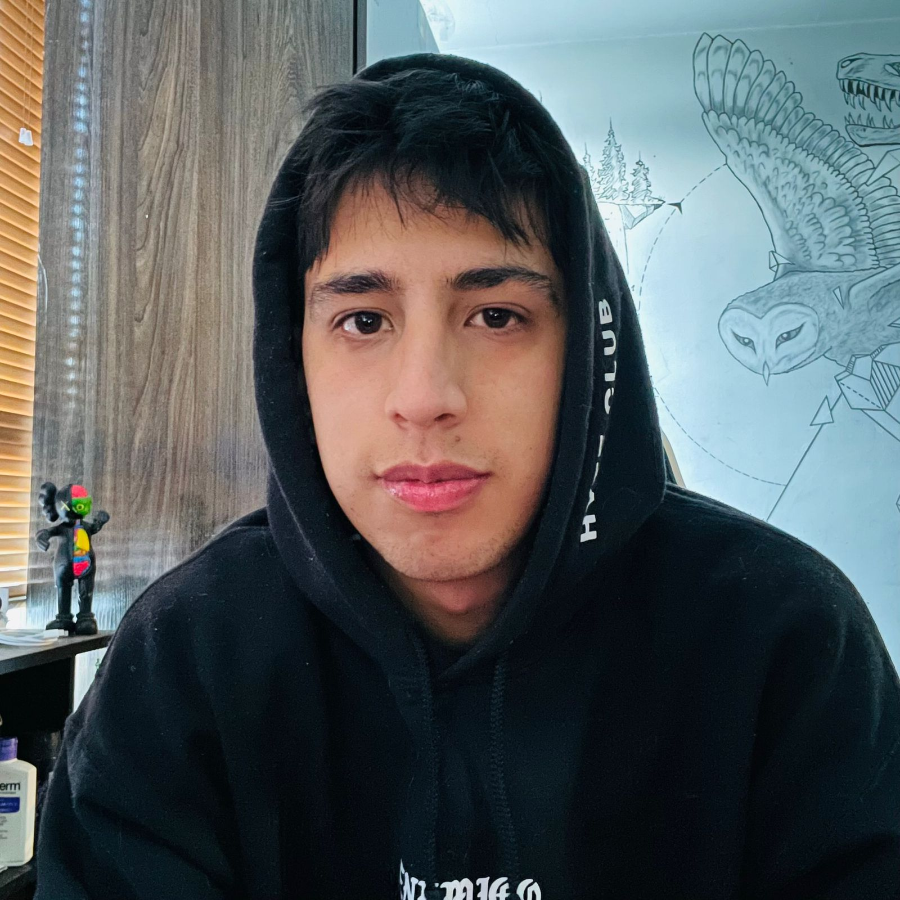

Juan Esteban Quiñones
Edad: 20
Sobre mí:
Soy Juan Esteban Quiñones, estudiante de quinto semestre de Comunicación Social y Periodismo, así como
también de Negocios Internacionales. Participo activamente en el semillero de Comunicación y Prácticas
Digitales, investigando temas relacionados con el periodismo, aplicando habilidades narrativas, ética
profesional y análisis cualitativo y cuantitativo.

Miguel Angel Borda
Edad: 20
Sobre mí:
Mi nombre es Miguel Ángel Borda, soy estudiante de comunicación social y periodismo además de mercadeo y
publicidad, estoy cursando quinto semestre. Participo activamente en el semillero de Comunicación y
Prácticas digitales abarcando temáticas de conflicto a nivel internacional, con habilidades en el análisis
de audiencia y del discurso.

Andrea Gisella Lizarazo Orostegui
Edad: 19
Sobre mí:
Soy Andrea Gisella Lizarazo Orostegui, estudiante de quinto semestre de Comunicación Social y Periodismo,
así como también de Derecho. Participo activamente en el semillero de Comunicación y Prácticas Digitales,
investigando temas relacionados con el periodismo, aplicando habilidades narrativas, ética profesional y
análisis cualitativo y cuantitativo.

Cristian Camilo
Edad: 20
Sobre mí:
Mi nombre es Cristian Rojas, estudiante de sexto semestre de Diseño Interactivo, apasionado por las
narrativas digitales que conectan a las personas con la tecnología de formas inesperadas. Desde el semillero
de Comunicación y Prácticas Digitales, exploro cómo las ideas pueden transformarse en experiencias
inmersivas que inspiran, informan y despiertan la curiosidad